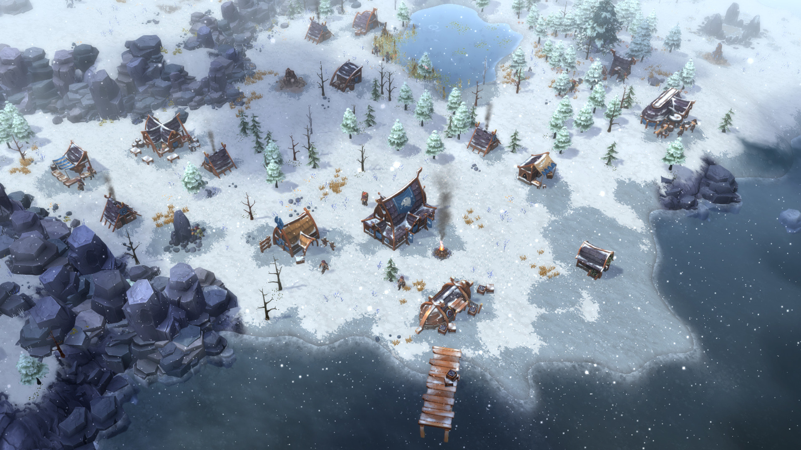
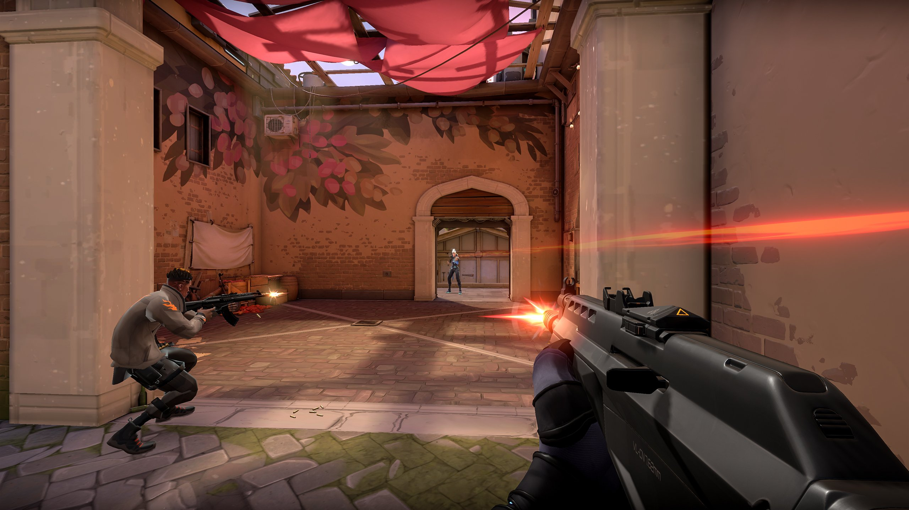
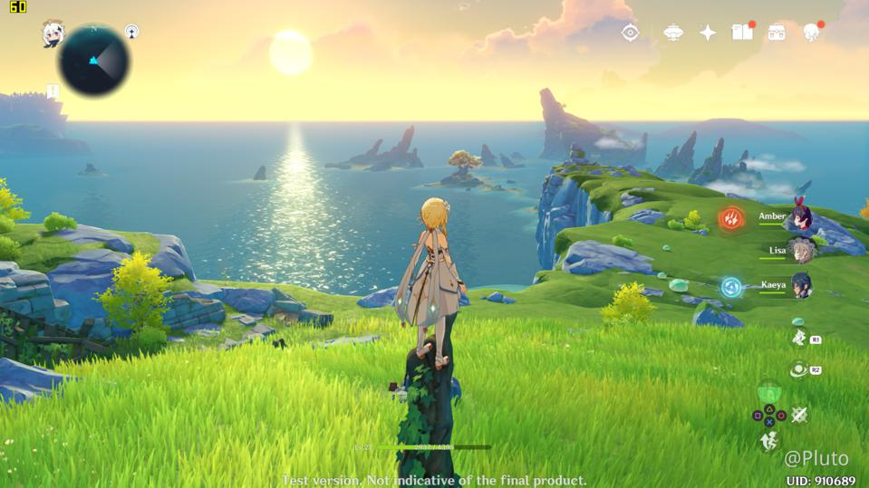
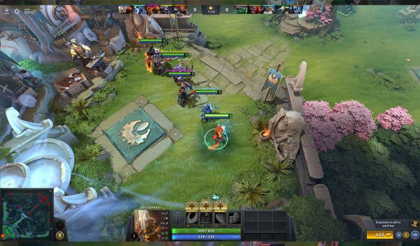

Jenis-Jenis Game Online
Untuk jenis-jenis game online ada banyak,tetapi dapat diperkecil menjadi 5 genre:
Real-Time Strategy

Real Time Strategi adalah jenis game peperangan yang biasanya meminta pemainnya untuk mengatur strategi yang baik untuk memenangkan permainan.
First Person Shooter

First person shooter adalah jenis game online yang berhubungan dengan tembak-menembak dengan sudut pandang orang pertama.
Role Playing Game

Role playing game adalah jenis permainan online yang memiliki karakter-karakter khayalan yang tentunya hanya ada dalam sebuah dongeng belaka.
Simulation Game

Simulation Game ini adalah permainan yang memiliki karakter yang dapat melakukan kegiatan-kegiatan yang biasa dilakukan manusia di dunia nyata.
Multiplayer Online Battle Arena

Merupakan sebuah game multiplayer online yang bertema pertarungan di dalam arena.
Pada umumnya game MOBA adalah game yang memiliki sistem pertarungan 5 vs 5, dan kerjasama dalam tim sangatlah penting dalam game ini.